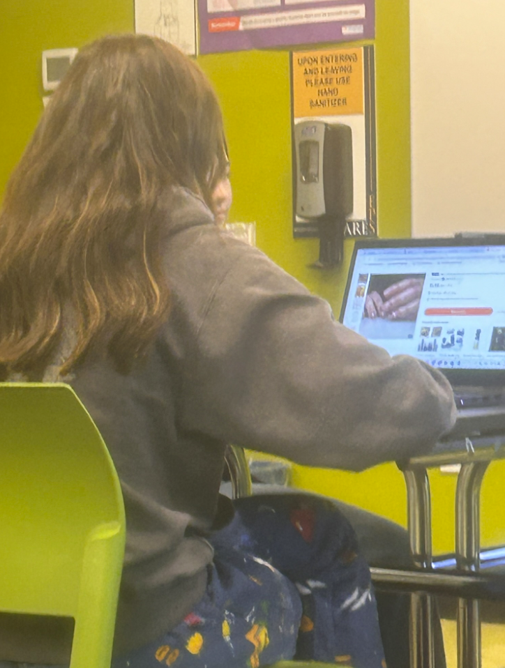
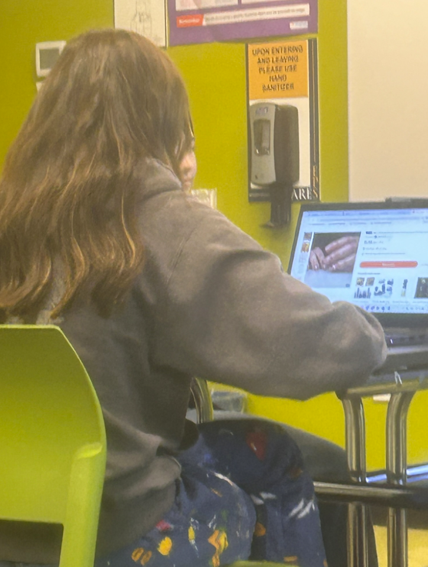

My favorite classes are:
- Study Hall - I love study hall becuase it is a good amount of time to get all my work done and I like being with my friends.
- WEB - I have gotten really interested in programming and I like WEB because it helps me further my skills.
- EP8 - EP is fun becuase we have learned so much about climate change and the enviornment and I can use that knowledge to help make a difference.
- Math - Mr. Graybeal is our math teacher and he is funny and makes class interesting.
 
